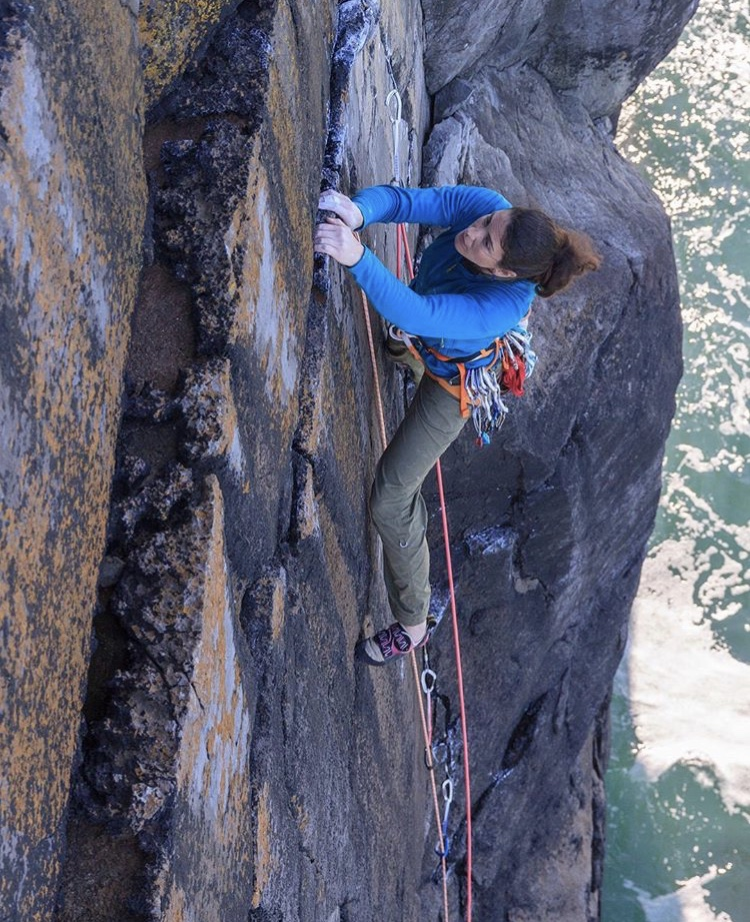

There will be a number of talks held in Doolin Hotel Friday and Saturday evening. There is no need to book for these events and they are free of charge. However we will put a donation box on the door in order to contribute to the cost of booking the room and the travel expenses for the spearkers. We'd also like to buy them all a drink for their time. We will run a shuttle bus to and from the crag before and after the talks. The cost for this is €5 return which you can pay the driver. There will be no talks on Sunday night. The following is the schedule :
Day / Time
Speaker / Subject
Jug City VS
Friday 8pm
Michael Duffy - A slideshow tour of Wicklow First Ascents